<title>Nature Calm First Screen</title>
<meta name="claude:viewport-fit-sides" content="cover">
<link rel="preconnect" href="https://fonts.googleapis.com">
<link rel="preconnect" href="https://fonts.gstatic.com" crossorigin>
<link rel="stylesheet" href="https://fonts.googleapis.com/css2?family=Ysabeau:wght@500;600&family=Inter:wght@400;500;600&display=swap">
<style>
  /* One column of rice paper, like the site itself: the pictures are the page. Single look on
     purpose (the mockups are paintings on paper), so every color is set here. */
  :root {
    --paper: #f3efe6;
    --ink: #1b1915;
    --muted: #5c564c;
    --line: #d8d1c3;
    --pick: #1b1915;
    --accent: #3f6b3a;
    --display: "Ysabeau", "Iowan Old Style", Georgia, serif;
    --body: "Inter", system-ui, -apple-system, "Segoe UI", sans-serif;
    color-scheme: light;
  }
  body {
    background: var(--paper);
    color: var(--ink);
    font-family: var(--body);
    font-size: 17px;
    line-height: 1.55;
    padding-left: max(16px, env(safe-area-inset-left, 0px));
    padding-right: max(16px, env(safe-area-inset-right, 0px));
    padding-block: 28px 64px;
  }
  main { max-width: 1080px; margin: 0 auto; display: grid; gap: 56px; }
  h1, h2 { font-family: var(--display); font-weight: 600; line-height: 1.08; text-wrap: balance; margin: 0; }
  h1 { font-size: clamp(34px, 6vw, 56px); }
  h2 { font-size: clamp(26px, 3.6vw, 36px); }
  p { margin: 0; max-width: 62ch; }
  .lead { font-size: 19px; }
  .muted { color: var(--muted); font-size: 15px; }
  header { display: grid; gap: 14px; }
  ul.plain { margin: 0; padding-left: 1.1em; display: grid; gap: 4px; }
  .idea { display: grid; gap: 16px; padding-top: 28px; border-top: 1px solid var(--line); }
  .idea-head { display: flex; flex-wrap: wrap; align-items: baseline; gap: 10px 16px; }
  .tag {
    display: inline-flex; align-items: center; justify-content: center;
    min-width: 40px; height: 40px; border-radius: 999px; border: 1.5px solid var(--ink);
    font-family: var(--display); font-weight: 600; font-size: 22px;
  }
  .idea.pick .tag { background: var(--pick); color: var(--paper); }
  .score { font-variant-numeric: tabular-nums; color: var(--muted); font-size: 15px; }
  .mine { font-size: 14px; font-weight: 600; letter-spacing: 0.02em; color: var(--accent); }
  .shots { display: grid; grid-template-columns: minmax(0, 3.2fr) minmax(0, 1fr); gap: 16px; align-items: start; }
  figure { margin: 0; display: grid; gap: 6px; min-width: 0; }
  figure img { width: 100%; height: auto; display: block; border: 1px solid var(--line); border-radius: 6px; background: #fff; }
  figcaption { font-size: 14px; color: var(--muted); }
  .why { display: grid; gap: 6px; }
  .reply { display: grid; gap: 8px; padding: 18px 20px; border: 1.5px solid var(--ink); border-radius: 12px; }
  @media (max-width: 640px) {
    .shots { grid-template-columns: minmax(0, 1fr) minmax(0, 0.62fr); gap: 10px; }
  }
</style>

<main>
  <header>
    <p class="muted">BiGH website · product pages, part 3 · November 16, 2026</p>
    <h1>Nature Calm’s first screen</h1>
    <p class="lead">OPC stands in a vineyard (live) and Turmerific in its field (built). Nature Calm is the last product on bare paper. Three calm California places; none repeats its Lake Tahoe or lavender paintings further down. Pick one.</p>
    <p class="muted">Mockups: new paintings laid on the live page in a browser. Nothing is built yet. The real bottle photo is unchanged.</p>
  </header>

  <section class="idea pick" aria-labelledby="built-title">
    <div class="idea-head"><span class="tag">A</span><h2 id="built-title">Built: The high meadow</h2><span class="score">8/10</span><span class="mine">Your pick</span></div>
    <div class="shots">
      <figure>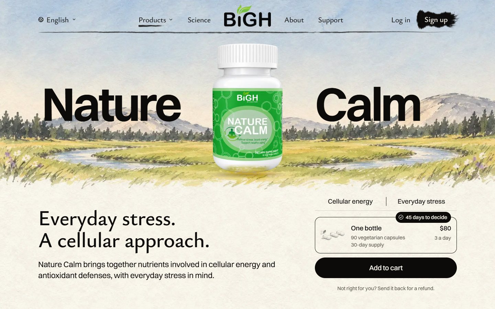<figcaption>Built page, computer</figcaption></figure>
      <figure>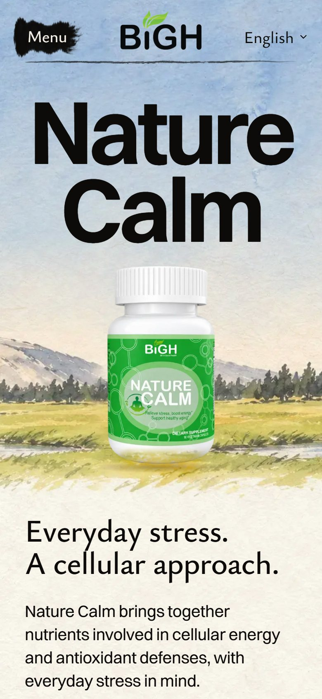<figcaption>Built page, phone</figcaption></figure>
    </div>
    <ul class="plain muted">
      <li>Checked on the built site: every product page, the homepage and the menu pass. Not live yet.</li>
      <li>What holds it back: the dark pine line runs behind the bottom of the name; on a phone the stream mostly hides behind the bottle.</li>
    </ul>
  </section>

  <section class="idea" aria-labelledby="now-title">
    <div class="idea-head"><h2 id="now-title">Now</h2><span class="score">5/10 at first glance</span></div>
    <div class="shots">
      <figure>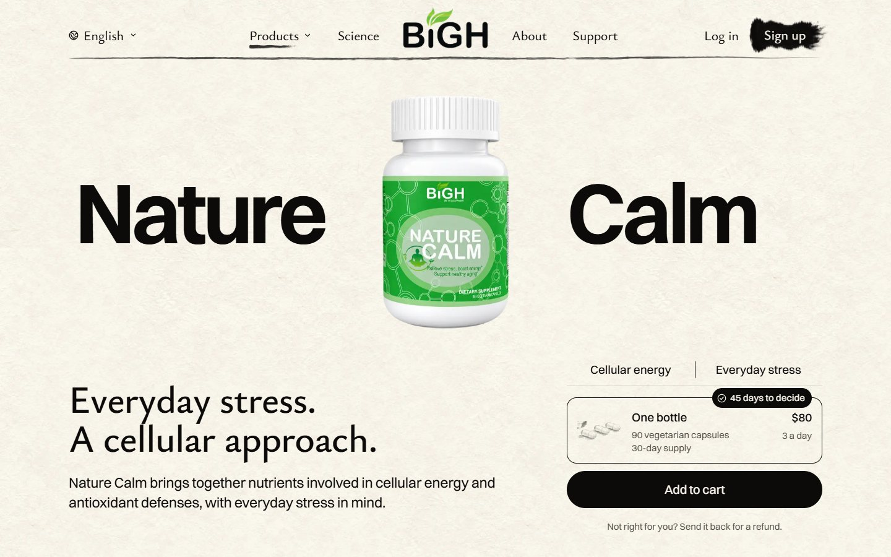<figcaption>Computer, 1440 wide</figcaption></figure>
      <figure>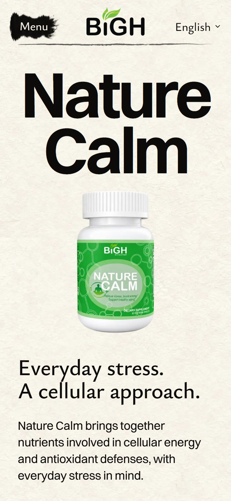<figcaption>Phone</figcaption></figure>
    </div>
  </section>

  <section class="idea pick" aria-labelledby="a-title">
    <div class="idea-head"><span class="tag">A</span><h2 id="a-title">The high meadow</h2><span class="score">8/10</span><span class="mine">My pick</span></div>
    <div class="shots">
      <figure>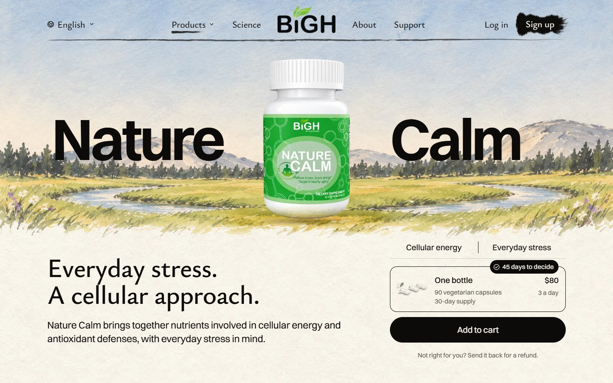<figcaption>Computer</figcaption></figure>
      <figure>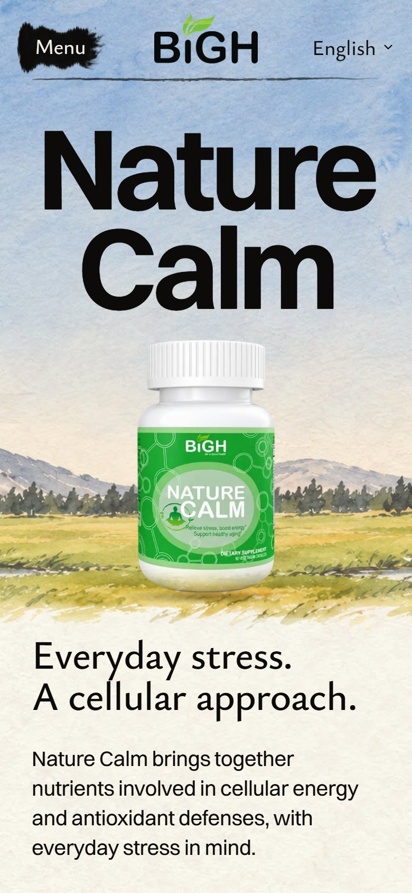<figcaption>Phone</figcaption></figure>
    </div>
    <div class="why">
      <p>Tuolumne Meadows on a calm summer evening: a slow stream winds through green grass under Yosemite’s granite domes.</p>
      <ul class="plain muted">
        <li>The calmest place of the three, and the green sits well with the green bottle.</li>
        <li>Granite domes say California at once.</li>
        <li>Weak spot: the dark pine line runs behind the bottom of the name.</li>
      </ul>
    </div>
    <figure>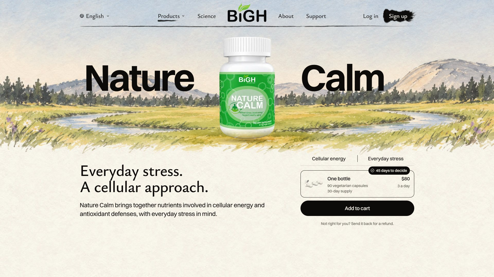<figcaption>A on a big screen, 1920 wide</figcaption></figure>
  </section>

  <section class="idea" aria-labelledby="b-title">
    <div class="idea-head"><span class="tag">B</span><h2 id="b-title">Still water at dawn</h2><span class="score">7.5/10</span></div>
    <div class="shots">
      <figure>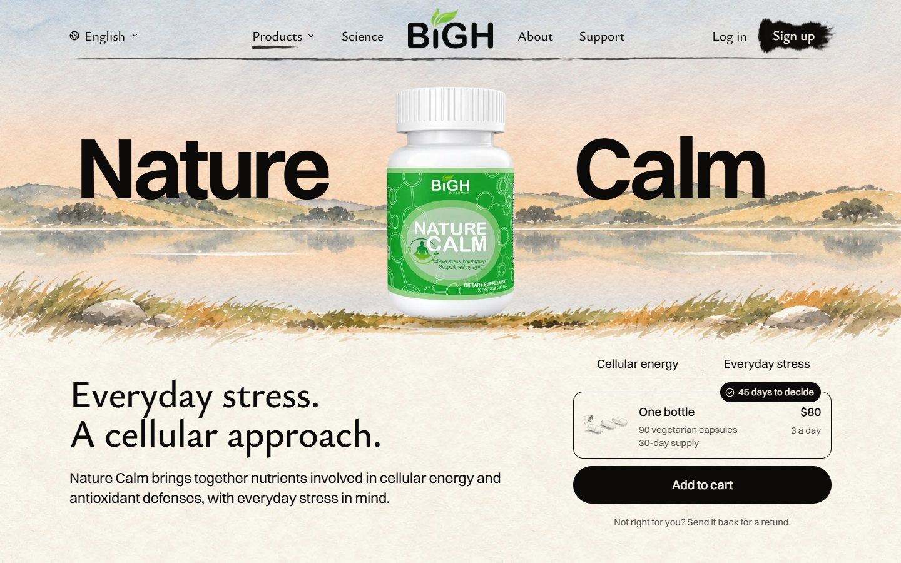<figcaption>Computer</figcaption></figure>
      <figure>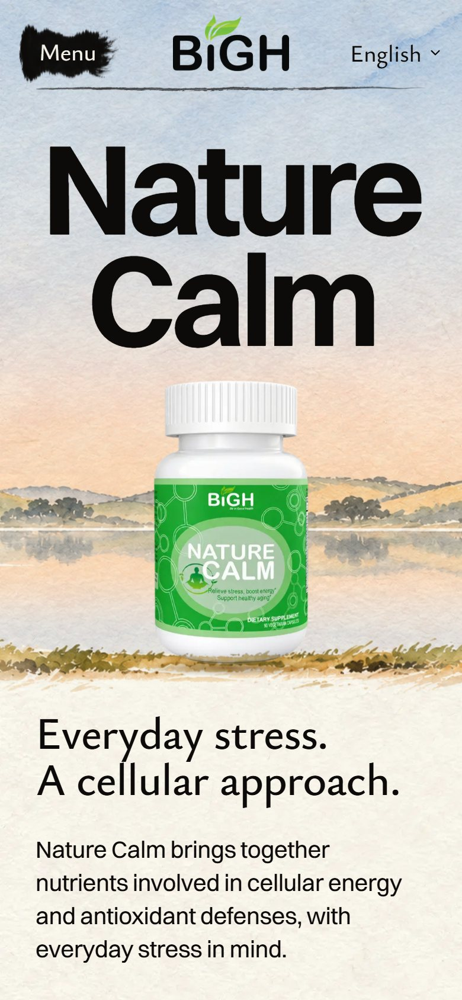<figcaption>Phone</figcaption></figure>
    </div>
    <div class="why">
      <p>Tomales Bay on a windless morning: the water still as a mirror under a soft peach sky.</p>
      <ul class="plain muted">
        <li>The softest mood of the three.</li>
        <li>Weak spot: the page’s next chapter is already still water (Lake Tahoe), so the idea repeats.</li>
      </ul>
    </div>
  </section>

  <section class="idea" aria-labelledby="c-title">
    <div class="idea-head"><span class="tag">C</span><h2 id="c-title">Aspens in autumn</h2><span class="score">7.5/10</span></div>
    <div class="shots">
      <figure>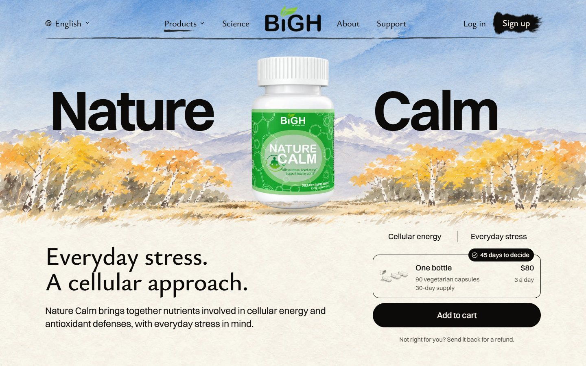<figcaption>Computer</figcaption></figure>
      <figure>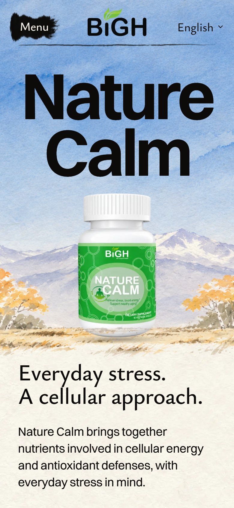<figcaption>Phone</figcaption></figure>
    </div>
    <div class="why">
      <p>The Eastern Sierra in early October: groves of aspens turned gold beneath pale snowy peaks.</p>
      <ul class="plain muted">
        <li>The brightest, most striking color.</li>
        <li>Weak spot: it reads more “beautiful autumn” than “calm”, and gold leaves sit near the gold-leaf energy idea used elsewhere.</li>
      </ul>
    </div>
  </section>

  <section class="reply" aria-labelledby="reply-title">
    <h2 id="reply-title">Next</h2>
    <p>You picked <strong>A</strong>, and it is built. Say “put it live” to publish it, or tell me what to change.</p>
  </section>
</main>
